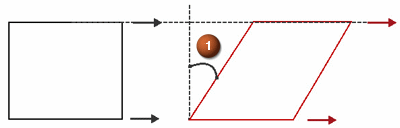
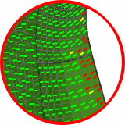

单向求解器为所有纤维在一个方向对齐的层片进行皱褶建模。
材料产生皱褶后，相邻的材料纤维可能彼此相对地滑动一定距离，同时彼此相对地维持相同的间距。

剪切角(1)是纤维滑动量的衡量。
单向层片锁定角属于材料属性，用于指定纤维可承受的最大滑动量。
软件将比较剪切角度与锁定角度之间的差异。

绿色 — 剪切角度 < 90% 锁定角度
黄色 — 90% 锁定角度 < 剪切角度 < 锁定角度
红色 — 剪切角度 > 锁定角度